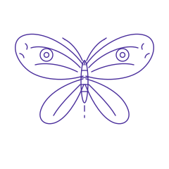
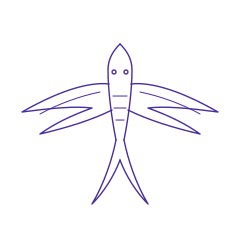

Traça
7–9 cm · £120
Reservar a traçaAtelier privado de tatuagem em Bristol. Fine line, botânica e single needle, uma cliente de cada vez e sem pressa.

Foto: Haberdoedas / Unsplash
Peças pequenas e médias, pensadas para envelhecer bem: linhas com espaço para respirar, sombreado leve, nada de detalhe que se perde em cinco anos.
Nota da demonstração: as fotos são de stock (Unsplash, licença gratuita) e servem só para ilustrar o layout. Não são trabalho dos artistas deste estúdio fictício. Num site real entram aqui fotos do portfólio do cliente.
Desenhos prontos, preço fechado, uma sessão. Cada flash é tatuado no máximo três vezes e depois sai da folha.

7–9 cm · £120
Reservar a traça10–12 cm · £110
Reservar o feto6–8 cm · £100
Reservar a lua
8–10 cm · £130
Reservar a andorinhaNovo flash na primeira segunda-feira de cada mês.
Se não sabes quem escolher, diz-nos a ideia no pedido e recomendamos quem a vai desenhar melhor.
Fundadora. Botânica e fine line desde 2014.
Desenha plantas a partir de espécimes do jardim botânico. Prefere peças que seguem o músculo: antebraço, costela, tornozelo.
Agenda aberta para dezembroResidente. Single needle e micro-realismo.
Insetos, retratos de animais, pequenos objetos com valor de família. Peças até 10 cm, muito detalhe, sessões curtas.
Lista de espera, cerca de 6 semanasResidente. Lettering fino e ornamental.
Letras desenhadas à mão, datas, palavras noutras línguas e ornamentos em pontilhado. Revê a ortografia contigo antes de desenhar.
Agenda aberta para novembroQuatro passos. Nada é pago antes de aceitares o desenho e o preço.
Ideia, zona do corpo, tamanho e fotos de referência. Demora cerca de cinco minutos.
Em dois dias úteis respondemos com artista, preço estimado e datas livres.
£50 para guardar a data. O valor é descontado no preço final.
Vês o desenho, ajustamos o tamanho na pele com o stencil e só depois começamos.

O stencil é o momento mais importante da sessão. É quando a ideia passa do papel para o teu corpo e ainda se pode mudar tudo: tamanho, ângulo, posição.
Por isso reservamos sempre 20 minutos só para isto, antes de ligar a máquina.
Foto ilustrativa: Allef Vinicius / Unsplash
Conta-nos o que tens em mente. Quanto mais concreto, mais rápida é a proposta.
Fine line usa agulhas finas e passa menos vezes pela pele, por isso a maioria descreve como um arranhão contínuo. Costelas, pés e mãos são mais sensíveis do que o antebraço.
Peças pequenas levam 1 a 2 horas, incluindo os 20 minutos do stencil. Para peças médias reservamos meio dia.
Todas as tatuagens suavizam. Desenhamos com espaço entre as linhas e evitamos detalhe abaixo de 1 mm para que a peça continue legível daqui a dez anos.
Sim, uma pessoa. A sala é privada e pequena, por isso pedimos que não tragas mais ninguém.
Levas para casa um guia impresso e película protetora. Lavar com água morna e sabão neutro, creme fino duas vezes por dia, sem sol nem piscina durante duas semanas.
Só pequenos e só com fine line, o que limita muito o que se consegue esconder. Envia uma foto no pedido e dizemos com honestidade se faz sentido.
Primeiro andar, com elevador. Casa de banho acessível. Estacionamento de bicicletas no pátio.
Só por marcação. Não aceitamos walk-ins.